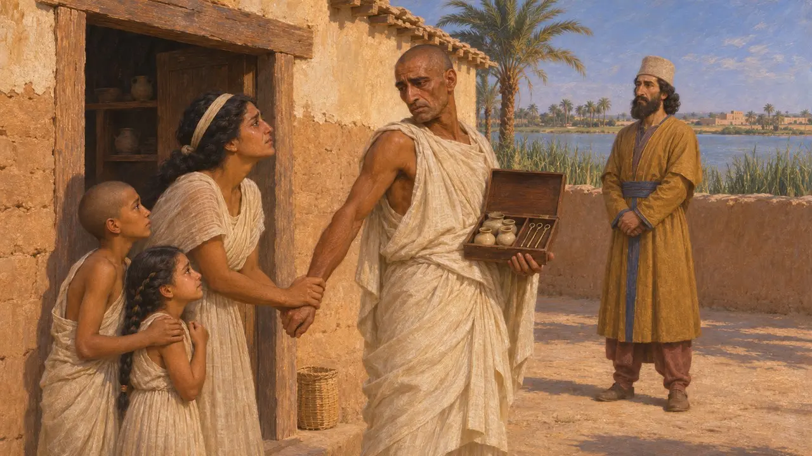
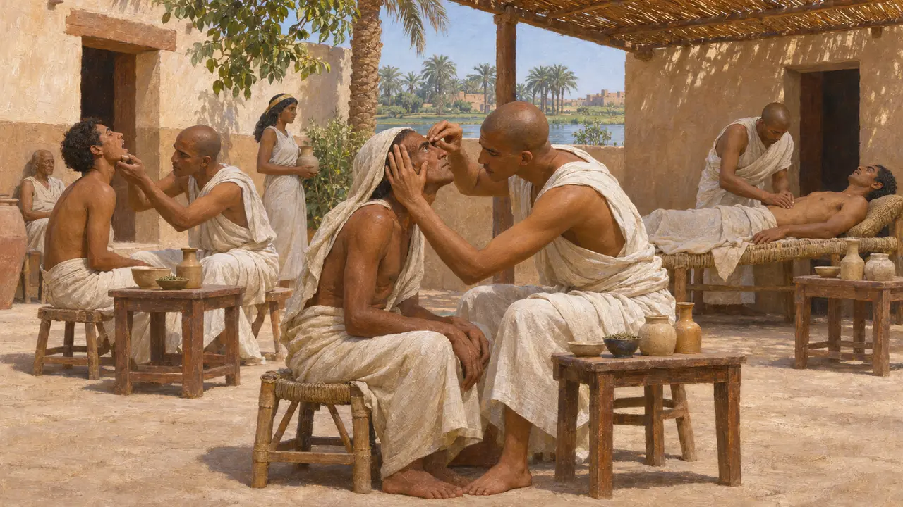
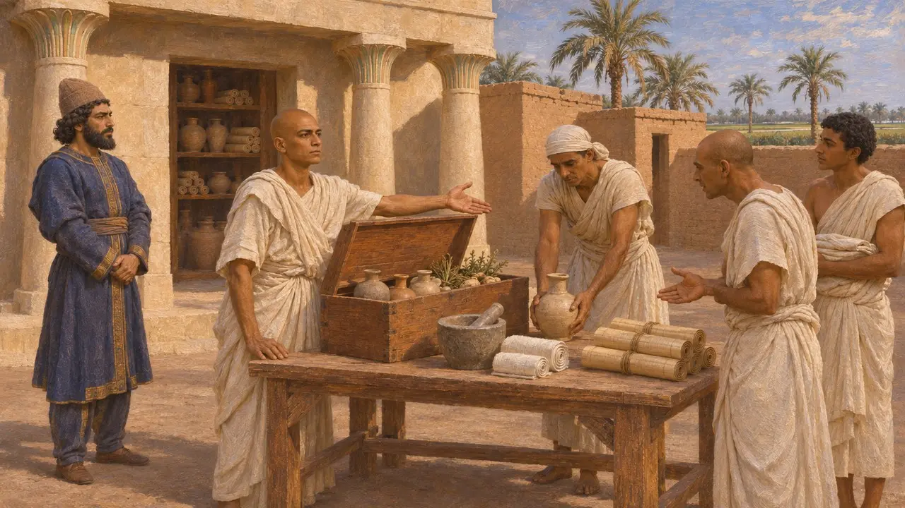
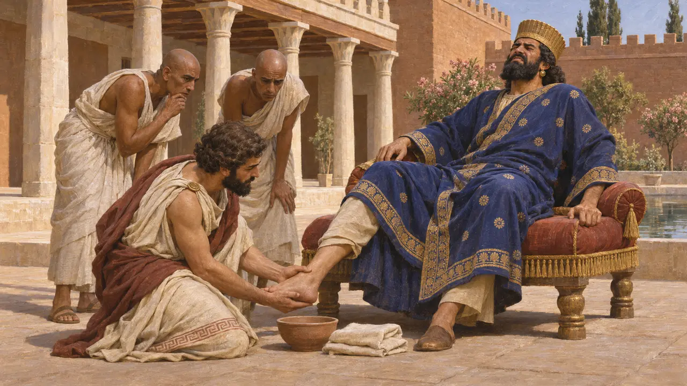

Дом лекаря
Египетские лекари на службе персидских царей, около 540–500 до н. э.
Египетские врачи славились по всему древнему Ближнему Востоку, и персидские цари призывали их к себе. Геродот рассказывает о глазном враче, посланном к Киру, а главный египетский лекарь Уджагорресент служил Камбису и Дарию. Их присутствие при дворе показывает, как держава привлекала искусных людей из своих провинций на службу Царю.
В игре: Египетский лекарь ходит по улицам и исцеляет встречные хвори, причём каждый лечит лишь одну болезнь, как описывает Геродот. На деле царские лекари лечили в основном двор, а правило «одна болезнь — один врач» преувеличено.

Глазной врач Кира
Античное свидетельствоГеродот сообщает, что Кир попросил Амасиса, царя Египта, прислать лучшего в стране глазного врача. Амасис отправил его, разлучив с женой и детьми, и врач затаил обиду. По рассказу Геродота, позднее он подговорил Камбиса просить в жёны дочь Амасиса, зная, что эта просьба оскорбит египетского царя. Геродот называет это одной из причин персидского вторжения в Египет в 525 году.
Herodotus 3.1

Каждому врачу — своя болезнь
СпорныйГеродот пишет, что в Египте каждый врач лечил лишь одну болезнь, и потому страна была полна врачей для глаз, головы, зубов, живота и скрытых недугов. Египетские звания действительно называют специалистов, например врачей глаз и врачей живота. Но сохранившиеся медицинские папирусы, такие как папирус Эберса и папирус Эдвина Смита, охватывают множество болезней, а многие врачи носили общие звания, поэтому историки считают, что Геродот преувеличил строгость этого правила.
Herodotus 2.84; J. F. Nunn, Ancient Egyptian Medicine, 1996

Уджагорресент и Дом жизни
Свидетельства эпохиНа статуе Уджагорресента, ныне хранящейся в Ватикане, высечен его собственный рассказ о своей службе. Он был главным лекарем при Камбисе и Дарии. По его словам, Дарий, находясь в Эламе, отправил его обратно в Египет восстановить Дом жизни (вероятно, в Саисе) — храмовое учреждение, где хранились учёные тексты, в том числе медицинские, — и снабдить его людьми и всем необходимым. Этот текст показывает, как персидский царь поддерживал египетскую врачебную науку.
Statue of Udjahorresnet; A. B. Lloyd, The Inscription of Udjahorresnet, JEA 68, 1982

Подвёрнутая лодыжка Дария
Античное свидетельствоГеродот рассказывает, что Дарий, спрыгивая с коня на охоте, вывихнул лодыжку. Египетские врачи при дворе стали силой вправлять ногу и сделали только хуже, пока греческий пленник Демокед Кротонский не облегчил боль более бережным лечением. Дарий собирался посадить египтян на кол, но Демокед упросил пощадить их. Эта история льстит греческой медицине, и рассказывают её только греческие источники.
Herodotus 3.129-132
Источники
- Statue of Udjahorresnet (Vatican)
- Herodotus 3.1
- Herodotus 3.129-133
- Herodotus 2.84
- A. B. Lloyd, The Inscription of Udjahorresnet: A Collaborator's Testament, Journal of Egyptian Archaeology 68, 1982
- J. F. Nunn, Ancient Egyptian Medicine, 1996